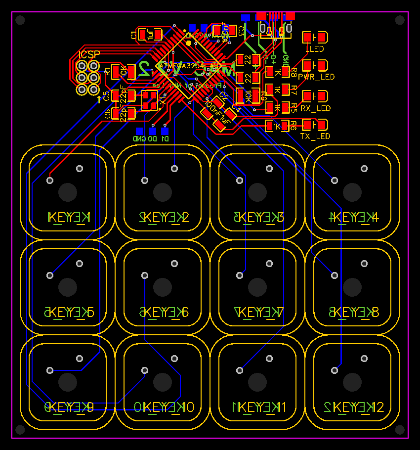

Introduction
For my freshman year independent study project, I decided to design a 4x3 key macro key keyboard, which would be able to execute simple tasks on my computer such as turn my volume up or down, or mute/unmute my microphone.
Inspiration
I got the idea for a macro keyboard from a product made by Elgato called the Stream Deck.
The Stream Deck features multiple buttons that you are able to program through software to execute simple tasks. It is called the Stream Deck because it is a popular choice among streamers for controlling features and aspects of their streams.
For the design of my keyboard I wanted something a little more simplistic than the Stream Deck. I had seen other homemade macro keyboards that featured less keys and a more minimalistic design, and I based my design largely off of those.
Circuit Design
I planned to create a custom PCB for my keyboard, so the next step in my project was to design the PCB.
I decided to use the Atmel atmega32u4 to power my keyboard, as it is relatively cheap, but mainly because it has a large amount of community support around it. The 32u4 can be found in a couple models of Arduino, so there is no shortage of information about it online.
To design my circuit, I used the EasyEDA online circuit designer. This website has a large database of electrical component models and layouts, which makes the design process much faster. EasyEDA is also associated with the PCB printing service JLpcb, so I was able to export my designs directly from EasyEDA to JLpcb to get them produced.
Circuit Population
Once my PCBs had finished their journey across the world (from China), it came time to assemble them and solder everything together.

After soldering everything on, the keyboard was physically complete, and only needed software to function.

To give you a sense of scale, the body of the 32u4 chip only measures 0.4 inches, and the entire keyboard clocks in just under 3.5 inches. This thing is pretty small.
Software and Functionality
As I mentioned above, the 32u4 chip can be found on some Arduinos, so I was able to use the Arduino IDE to develope the software for this keyboard.
Because screenshots of Arduino code are incredibly displeasing to the eye, I have excluded them from this webpage, but the keyboard has all the functionality that I hoped it would, plus some other cool features like USB-C output, key bounce prevention, and NKRO.